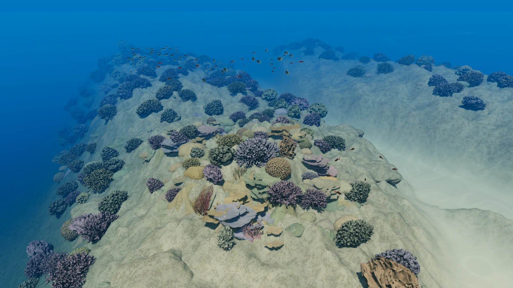

研究與資料
Lyons 等（2024）：全球淺水珊瑚礁製圖研究。本頁的正確率來自研究對最終地圖的驗證。
珊瑚長在礁岩上，旁邊還有裸露的岩石與沙地。「珊瑚礁」說的是一片環境，不表示海床上每個地方都覆蓋著活珊瑚。
要畫出這片環境，
得分開問兩件事。

珊瑚群裸露礁岩沙地以吉里巴斯 Abaiang 環礁為例。定位點沒有移動：地貌圖把這裡分為「外礁坪」，底質圖則分為「岩石」。前者說位置，後者說海床。


同一個定位點：地貌是外礁坪，主要底質是岩石。
兩張圖的範圍、方向相同；定位點為 172.86525°E、1.86975°N。這是官方公布的分類，不是現地驗證點。留白代表本圖沒有分類資料，不代表沒有珊瑚。
地圖暫時沒有載入。文字保留同一定位點的兩種分類。
依 Allen Coral Atlas 官方向量圖資繪製，保留官方類別色彩。資料取得於 2026 年 10 月 26 日；這是服務快照，不宣稱與凍結的 v2.0 光柵逐格相同。地圖 © Allen Coral Atlas Partnership and Arizona State University，CC BY 4.0。
只知道這裡是礁坪，還不知道海床上主要有什麼；只知道是岩石，也還沒交代它在礁體上的位置。分開描述，才能比較不同礁區的環境。
地圖中的「珊瑚／藻類」是合併類別。它沒有把活珊瑚和藻類逐一分開，也沒有辨認每一株珊瑚。
先從整片礁區靠近海床，再接上同一位置的兩張分類圖，看看研究者如何製圖，以及最後分得多準。
118 秒，無聲。可暫停、選擇段落、逐幀檢視，或在原頁面放大。
開啟「看動畫」後載入播放器，下方保留完整解說。
前 20 秒與後段環境示意是概念礁區，不是 Abaiang 實測地形。接下來的分類圖來自官方資料，規則修訂另以概念圖說明。
水下的顏色會受深度、水質與海床材料影響。研究結合 Planet 衛星影像、推估水深、波浪環境等資料，再由專家整理參考標記，教模型辨認不同環境。
研究者為各製圖區分別訓練隨機森林模型。模型中的多棵決策樹依影像與環境線索判斷，再整合成地貌或底質分類。不是只按某一種顏色，就認定那裡有珊瑚。
研究者再依礁體結構的規則與專家判讀修訂分類。例如，一小塊被分成「礁脊」的區域若被大片內礁坪包圍，就不符合礁脊應位於礁坪邊緣的關係，需要修正。這是論文的規則例子，不是 Abaiang 定位點的修改紀錄。最後發布的地圖結合了模型、規則與人工檢查。
研究用保留的參考樣本評估最終地圖。下一頁的正確率說的是這份經過修訂的地圖，不是動畫中的模型，也不是定位點的信心分數。
研究讓不同礁區有一致的分類方式。但地圖畫得細，不代表每個地方都分對，也不等於知道哪裡有多少活珊瑚。
在 30 個製圖區中，地貌圖的平均整體正確率為 69%，底質圖為 66%。各地的表現並不一樣。
| 分類內容 | 平均整體正確率 | 各區範圍 |
|---|---|---|
| 地貌 | 69% | 46–89% |
| 底質 | 66% | 49–80% |
Lyons 等（2024）；範圍是各製圖區的結果，不是信賴區間。
整體正確率描述評估樣本中，地圖分類與參考分類一致的比例。69% 和 66% 是 30 個製圖區的平均，不能解讀成某個定位點有 69% 或 66% 的機率正確，也不是全球每個位置都一樣準。
這套地圖能整理礁區的地貌與主要底質；活珊瑚有多少、是否健康，仍要另外調查。
ACA v2.0 的地圖網格是五公尺。這不是說研究者每五公尺都下水量過，也不表示能看清每一株珊瑚。
影像看不清楚、太深或太混濁的地方，可能沒有可靠的分類。地圖留白不能直接當作沒有珊瑚；「珊瑚／藻類」的顏色也不是健康評分。
本案以 2024 年研究與 ACA v2.0 為基準。底圖由 2018–2020 年多個日期的衛星影像組成，地圖於 2022 年修訂，論文於 2024 年發表。三者是不同時間，不能把版本之間的改動，直接解讀為珊瑚增加或消失。
Lyons 等（2024）：全球淺水珊瑚礁製圖研究。本頁的正確率來自研究對最終地圖的驗證。
首屏與動畫是概念礁區，使用 Smithsonian 乾燥珊瑚標本掃描作部分外形來源，顏色為情境配色。它們不是這座環礁的物種紀錄。
兩張分類圖依官方公開向量資料繪製，定位點經幾何核對；沒有重新執行研究模型，也沒有替這個點計算信心分數。